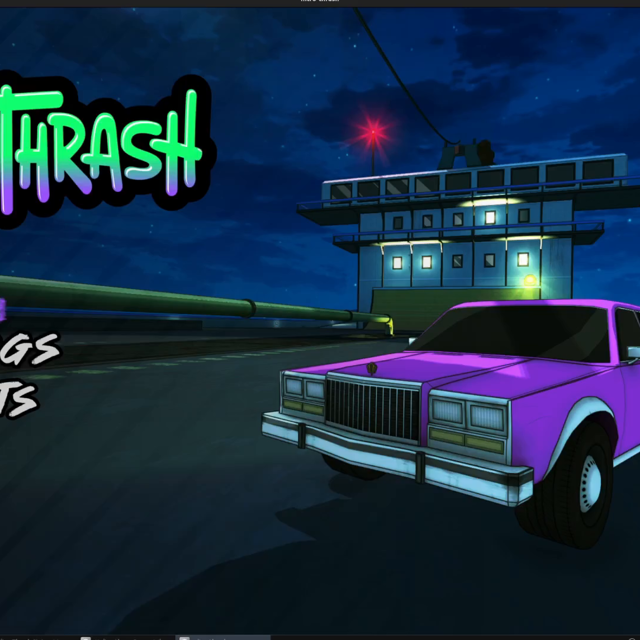
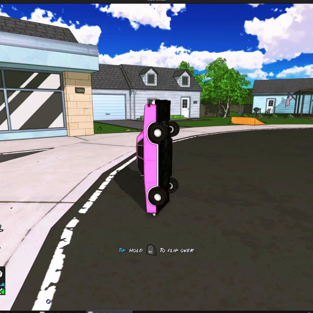
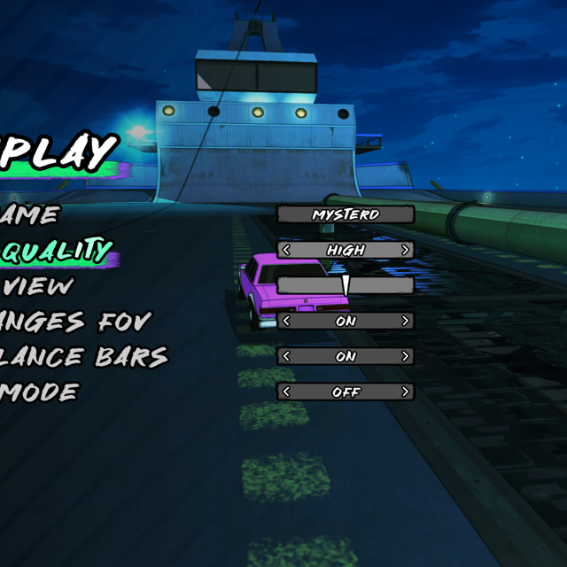
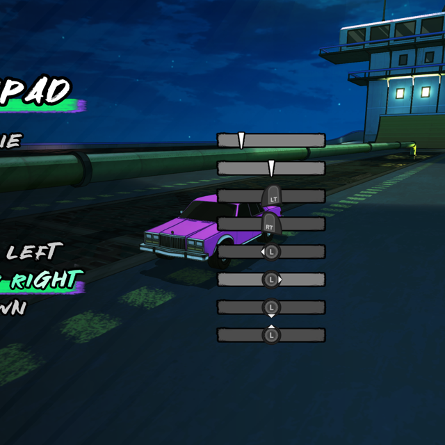

Since the last devlog I made 40 commits (but they were on the larger side).




The biggest recent change was updating from Unity 5 to Unity 6. The upgrade broke so many things, and getting everything
back into a working state was a bit of a nightmare. Unity 6 brings a lot of bug fixes and useful features so I think overall it
was worth it.
The second biggest change was getting Steam multiplayer working. The game now uses a custom UDP networking backend built on
top of Steamworks, which handles lobby creation, peer-to-peer sessions, and friend invites. You can browse friend lobbies from
the multiplayer menu and join directly, or accept a Steam invite from anywhere in the game and it'll cleanly transition you
into the lobby. I maintained the old socket-based networking system so I can always fall back to that if needed.
A lot of work went into menus as well. My original menus were using the "UIToolkit" system in Unity, but I found them
frustrating to work with and more limited than I would like. While it was faster to create a menu in UIToolkit, it was harder
to make it feel dynamic. Thus, the settings and mission select screens were rebuilt from scratch using my newer menu system,
which makes them consistent with the main menu and a lot easier to work with going forward. The mission select now has
satisfying paper-shuffle sounds and animation on transition. The old UI toolkit-based versions are gone.
Bulletpoints:
Upgraded to Unity 6
Added a new level unlock animation
Added a new mission complete animation
Menu backgrounds now have a dynamic moving gradient behind them
Mouse input is now ignored when navigating with keyboard or gamepad
Smoothed out keyboard steering (before it was too hard to fine tune the direction you were 'aiming')
Added an "ultra" shadow quality setting
Fixed a bug where the LUT would break at lower texture quality settings
Fixed aspect ratio issues with the HUD
Vehicles that weren't finished loading before a level transition now reload correctly
Fixed various UX issues with menus
Fixed up every issue that was present in the Linux version
Created build pipelines for the full game and the demo version
Various polish and cleanup for the inevitable demo version
I've been singularly focused on putting together a demo, and putting every task that isn't necessary for what I imagine the
demo to be on hold.
Level 2 is now in a good state in terms of detail. Many areas got a new detail pass such as the sewer area and the triangle
area, and other small details were sprinkled throughout the level.
Most of the soundtrack is now in-game, as well as a credits page for each of the bands in the game.
Performance has been improved, with particular attention paid to the little physics objects sprinkled throughout two of the
levels so far.
Lots of little improvements were made like:
added the ability to unlock levels
the camera now stays within the level bounds
an indication that pressing gas will flip you over was added
the HUD and menus respect ultra-wide monitors
the appearance of the balance bars were improved
every menu that should use transitions now use them
multiple replay files are now supported
the look and feel of the replay viewer was improved and bugs were fixed
COMBO and NITRO letters were added to the HUD during those missions
vehicles no longer vibrate in the garage
added an indicator on screen for save point usage
improved vehicle loading system
displayed the wallet in every area that it would be useful
fixed up all mission previews and made the camera automatically zoom
This past month has mostly been focused on continuing the detail pass on the second level and optimizing these new details.
I didn't keep detailed notes on every change this past month, so I'll keep it general and show pictures of a few key areas
instead. This detail pass is almost finished, I only have a few more areas to touch up.
Here are some notable changes I've made to the game:
Levels:
Finished "phase 2" of Level 3 - meaning it looks good enough to film now but it's quite done.
Created destructible dynamic light objects
Started making foliage for the levels
Vehicles:
Added a new car "capo"
Added pizza sign topper
Refined the original car to be smoother
Adjusted rim textures
Gameplay:
Air rolling while on the ground no longer messes up your turning
Missions / Gamemodes:
Added 'highest combo' gamemode
Prevented cheating in race modes by setting the teleport to the checkpoint
Misc:
Online player indicators now show the player's secondary color too
Fixed replay bugs surrounding checkpoints and objects
Significantly improved the workflow surrounding level importing
Refactored level shaders to be easier to change
Added dynamic light support to level and vehicle shaders
Rewrote smoke shader to prevent stutters in game
Added "portrait mode" toggle for the HUD to record shorts
Started making a new main menu
As for things that are surrounding the game, I have further news.
I've finally formed an LLC so things are getting pretty official.
Pangolin, a band from Florida, reached out to me about adding their music to the game. And I think they're a great fit so I
now have permission to add three of their songs to the game!